| 9月30日 委ねる！ お医者様との出会い。検査病院の先生 歯科医 内科医 眼科医 以前、お世話になった皮膚科の女先生 ８６歳の心身安寧境地、今感謝有るのみ。 AM8時50分 町内のT病院行き、6時半起床からそう決めた、熱っぽく胸が苦しいから只事ではないと思えた。尿も黄色い。ポカリだけ飲みカーデイガンを羽織って、車で5分の病院へ向かった、駐車場が空いていたので幸いした。去年冬大風邪を引いた時、此処へ来たが患者さんが溢れていてエレベーター前で帰った事があった。呼吸器科が専門と玉川さんから前に聞いていたお医者さん。 初診時間、ゆっくり話を聞いて下さる、レントゲン、心電図、血液検査。 結果、レントゲン・心電図・異常がなかった。 此処で私はハッと一昨日の自分の行動を思いおこし、年齢をも思い出した。教習や往復運転などの行動を先生に追加報告をした。検査結果が異常がなければ、一昨日の反動の疲労に違いないと自覚したから。 先生は全てカルテに書き込んで居られた。 3階の広い処置室も全ての部所で看護婦さん達がパソコンで各患者の処置を打ち込んでいた。 薬は近い薬局へ、コレステロール・30日分、風邪を引いた時に飲む薬２錠、10回分 （必要時）を頂く。 私の前の患者さん３人も診察に長い時間をかけて居られたが私の場合もカルテに向かって話を聴きながら、書き込まれていた。余分を省こうとすると、”何でも話して下さい” と仰った。 私は今朝起きて直ぐ、苦しいので、胸、心臓部、背中に膝用の湿布を貼ったが、着替える時、胸以外は、剥すのを忘れていた。 聴診器を使われた時にハッと気がついたが、今朝はそれ程辛かったのだ。 先生は私の状態や気性を見抜かれたと思う。 以前から使っている薬は初診票に薬品名を書いておいた。自分で薬をコントロールして飲む私のやり方を信頼していただけたと思う。 長い間一ヶ月に一回コレステロールの薬を頂く為に病院通いをして来た私は、なるべく自分で出来る処置は自分ですることにしている。今後もこれで自己管理が出来そう、極近いお医者さんに替わりたかったが紹介状もなしに実行してしまった。検査病院の先生に手紙で報告、ちょっと気が重い。 げんきんなもので午後は目医者にも行く元気が出た。視力について昨日は検査が通らなかったと申し上げたら、診察後、充分見えるから大丈夫 視力検査の時もたもたしていたら駄目よ！てきぱきやらなくてはね！運転判断はそうしたものでしょう！と、笑って仰った。私は水頭症なんです、涙が出るから脳の髄液が出るのかしらって言ったら笑われた。 皆眼が乾燥して困るのに涙があって、良いほうですよ。 纏めて見れば８６歳と言う年なのに気分が若いからアンバランスに陥りやすいと言う事だろう。 明日はお昼に健康センターに行って皮間さんから花を頂く予定、わくわくする。家に無い素敵な花が家族になるのだ。 それにしても記念すべき感謝な一日になった。めでたし。 しかしおごるなかれ。 追記・・・診察の時にネックレスが無くなった。 レントゲンで気がついた。看護婦さんも先生も心配して下さった。大好きな４５年前から外した事がない金のチェーン。 再出発の記念かも・・・と、さばさばと考えよう。 咄嗟に ”要りません”とお忙しい方たちに会釈して引き上げた。 9月29日 PM2時歯科行き、義歯の仮あわせはもう一回4日にやることになった。きっちりと出来ていたがほんの少しだけ高くして調整に掛かるらしい。合わせる場合削る事が多く高さが低くなる事は私も知っているので、先生と暗黙の意見が一致したみたいだ。後では出来ませんから、と嬉しい言葉を仰った。受付の人に聞いた所、開業して3年ということだった。もっと早く此処を知りたかった。 江田島の皮間さんからお電話を頂く。1日に広島の気功体操の審査員で出られる時、セントポーリアを持ってきて下さると言う。植え替えたら送ると崩れるから、と嬉しい電話だった。その日はお昼休みにお会いして後、体操を見学も出来る。心が急に忙しくなった、 10月1日は夫の命日なので今日、歯医者からの帰りに、お花を選んで買って来た、お山へ4時半におまいりする。誰も居なくて声を出してお父さんに話が出来た。 1日にもう一回行きたい。 昨日の今日で、やっぱり疲れが出て、昼間横になった。夜は若鶏もも肉の皮をとって下準備し、2時間後、から揚げにしたが美味しかった。 ビールの小缶で楽しんだ。 昨日早起きしたので今朝も6時半に起床ができ、食欲があった。食欲は久し振りだったので嬉しかった。早起きは三文の得？ それとこの所、夜9時過ぎたら何か欲しい時、ポカリを飲んで自制しているのも良いと感じている。胸のレントゲンが頭の中に居て、コントロールしているようだ。息苦しさはいくらか楽になった。先生が下さったお薬は2回だけで中止、便秘の症状が出たからだ。 恵理に以前、売薬の風邪薬は下痢も止まるよ！と話した時、咳止め（コデイン）が入っているからネ。と言われて風邪薬を飲むときは必ず一緒にビオフェルミンも服用している、が快調だ。 薬の宣伝になったらいけないけれど、確かにSは良いと思う。 自分の体は自分で観察しましょう。明日で9月が終る。夕方慣れないながらもネットで広島県の地図で検索し、免許センターまでの道を調べてみた。3年前の記憶と同じガソリンスタンドが岐路にあり、アストラムライン、からの道程を確かめた。 地図は買わなくても良い。これからも インターネットで検索する習慣をつけたい。 |
| 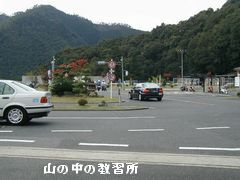 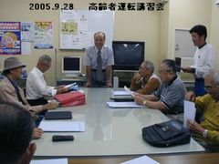 |
９月２８日 高齢者免許更新の為の講習会の日。 画像下は講習終了後の所長の挨拶 ６時起床 ７時シャワー、パン朝食、８時４５分出発、自動車学校まで３０分ひた走る。 既に書類が配られ、皆席についていた。私は手前真ん中、今回も紅一点です。３人一組で９人クラス、テレビで運転マナーを見た後、本の内容の説明を聞く。続いてＢＭＷで運転開始（３人一組）オートマチック、無事終了、後、眼の検査、これで私は点が取れなかった。ドライブ用のメガネで近用を持って行かなかったので、交付の際、再検査になるそうだ。夕べから用意したのに大失敗。 画面を見ながらペダルを踏む反応検査の数々、単純反応検査（ブレーキ） 注意配分・複数作業検査（アクセル・ブレーキ） ハンドル操作検査、画面での走行テスト検査は機敏に出来たけれど、平均点は３で普通だった。 全部済んで、終ってから玄関前で記念撮影をして下さった。１０分休憩の時、座席の右隣の方が７３歳の方で家内がぼけて気が荒立って困っています、と話された、大変らしい。お二人でお暮しですか？と聞く、息子達と一緒です。 あぁ良かった！ にこやかだけれど寂しそうで思わず背中をさすっていた。皆さん７０台の様だった。 帰途 戸坂の世良さんの近くで止まり携帯をかけてみたら在宅、寄って行くことにした。暫く会っていない。 一緒にインスタントラーメンをご馳走になった。生活は娘さんと同居なのだが隣のビルの１階に６畳位の自分の部屋を借りて仕事部屋にしていると聞いていた。トイレや炊事場もついている。彼女の最近の生活の全容を見聞きした。老人向けの手芸、ちりめん等の布でさまざまなものを作って２，３人の生徒さんに教えているようだ。洋裁もしている、作品を皆出して見せてくれた、本当は絵が描きたいそうだ。布や作品で部屋がいっぱいだった。でも 心配していた心臓も膝も大丈夫なようだったので安心して帰途についた。 買い物も済ませ家に帰って、お借りしたままのターシャさんの本を返しに行く。 帰宅してお茶にして甘いものを食べた。薬を飲み、少し眠った。先ずは済んだ。 最後の「３年有効免許証」を貰う為、来月早々石内まで走らなければならない、その前に地図を買いに街に出よう。 体の状態は年を考えればこんなものだろうと思う。息苦しさが有るが、ゆっくり回復させたい。 明日は歯のかり合せ、眼科へも行こう。 右眼が見えにくくなっている事は確かだから無理は出来ない。はっきり眼の状態を先生から聞いて対処したい。 |
| 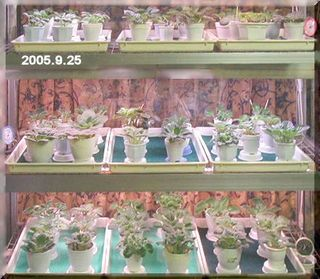 | ９月２５日 点滴が効いたのか今日は朝から楽になった。しかし大きい声は出しにくい。 今日も体を動かしてみよう！一昨日は思い切って慎重に行動した、本当はお山へ参る筈だったのにそれを止めて、モンステラを植え替えた。何時も自分をテストしている私が居る。 その作業が無事済んで昨日は病院行き、点滴を ”上を向いて寝ると息苦しいから”と、辞退したのに先生が”楽になるよ”と仰ったが”あの３０分の点滴は抗生物質だったのかもしれない。お蔭で今日は秋の爽やかさを味わう。体を使っていた方が良いようなので、玉しだの植え替えに掛かった、一鉢を崩して鉢をあけたら、凄い塊、玉しだの名前どうり根に玉っこが一杯付いていて始末に時間が掛かったが古い根っこを切り取り沢山の株分けが出来た。梶さんの家の玉羊歯もついでに植え替えた。私がしゃべらないで作業したので、”しんどいのに大丈夫？”と、心配する。しゃべらなければ良いと応え、芽が出始めている古株の玉羊歯を整理して、家の株分けをした３本を追加植えして気が済んだ。梶さんは私任せ、責任より私の見栄かもしれない。 自分の気が済むのだ。後は任せて家に帰り、残った小分けした株を大、中、二鉢に植えた。たっぷりの水を遣り、根を相当切っていたので長い葉先や弱々しい葉は元から切ってすっきりした。涼しくなったので楽に仕事が出来て感謝。 国勢調査の書き込みも済んだ。今夜１１時からローカル放送でＹ先生の学校の 「生命の森の修学旅行」という放送が有るから、「時間の都合が良かったら見てください」とＹさんからメールが入っている。今夜だ、後４０分、夕方、今のセントポーリア（消毒、植え替え、を済ませた鉢を並べたワーディアンケース内の３段を撮ってみた。こんな状態から冬、春、何処まで育つか始めて記録する気になった。ターシャさんのお蔭かもしれない！ 今日はＤＶＤとＣＤの解らなかった所が解ったので、これで沢山の画像の整理をしてパソコンを軽くし、恵理のハワイも載せたいと思う。 |
| 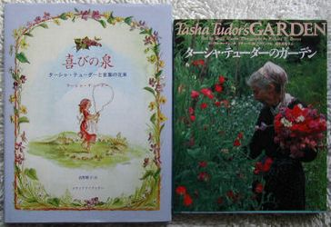 | ９月２４日 １０時、病院行き どうもハッキリしな体の状態なので診て頂く。レントゲンの結果は肺炎ではないが肺門辺りのリンパ腺がおかしい。３０分掛かる点滴と薬２種類、（去痰剤と痛み止め）息苦しい症状には小さい貼り薬が出た。ポカリだけで朝食をとっていなかったので半年振りの血液検査もして頂く。様子次第でＣＴを撮ると言われた。（静かにしていれば大丈夫な気がする。）電話は疲れる、必要な時はメッセージで済ませたい。留守電にして２，３日、声を使うまい。朝食抜きだったので帰りに”ちから”のうどんやおはぎを買って来て食事を済ませる。少し休んだら昨日植え替えたモンステラが気になり、葉の誘引を済ませた。ミシン屋さんが新もの煮干などを届けて下さる。手話の形で直ぐ帰られた。運転教習日の２８日までに健康を取り戻したい。セント・今晩も１０鉢は植え替えたい。 ９月２３日 今日は思い切ってモンステラの植え替えに掛かった。支えるヘゴが必要なので、鉢土の上、１０ｃｍ残してヘゴを鋸で切り、短くなったものを使う事にした、支えきれない大きいモンステラもヘゴと同じ場所から切った。長い根がいっぱいだ。土は先日作って用意してあるので楽だったがヘゴの固定に時間が掛かった。 力は無いが順序を踏んで知恵を絞って重いモンステラをヘゴに添わせる、ようよう葉を誘引し用意した用土全部を使い固定出来た時は嬉しかった。虫除けスプレーを体中にかけて汗びっしょりになった。 庭の真ん中に置いて水遣りを終ったら薄暗くなっていた。和恵さんが来たら、手伝って貰って実行しようと思っていたのに一人で出来た。余り遅れると、後から出る葉が小さい事も気になっていた。 今日も広島は３１度でクーラーを入れている、一番大物が片付いた。 マランタは今が見ごろ、切りごろ、皆さんには切りなさいと言っているが私は１０月になりそうだ。玄関前の植物の記念写真をもう一度撮ってから切りたい。 クロトンは何枚も見事に葉を加えた、これらは１０月に全部手入れをしようと思って居る。 作業中、私にターシャさんのテレビ番組を知らせてくれたＹＴＧさんがターシャ・テューダーさんの本を２冊、ゆっくり見て下さいと届けて下さった。絵本は５冊も持っておられるとか！優しい絵に、 いわさきちひろさん の世界を思い出した。 ２８日までにセントポーリアを全部植え替えたい。芳しくない株は諦めて数を少なくし、冬の管理を上手にして奇麗な花を咲かせて楽しみたい。 |
| ９月２２日 ３度目の歯科行き、歯茎の台のかり合わせ、一週間後に歯をつけて再かりあわせがある。大変センスが良い先生に思えて楽しみだ。 家から近い事が最高で、内科の医院も極近い場所の先生を選ぶ（家庭医）年齢になった。 昨日は熱っぽく一日体を休めた、考えてみると、食事が質素過ぎる。こう云う場合友人は抗生物質３日分ぐらいで快方に向かうケースが多いらしい。 私は支度をして出て行くのが面倒なのと、体が弱っている時は別の病気が移るのが怖いから、自分で体に栄養を付けようと図った。良い肉少量と太葱二本糸こんなどですき焼きもどきを作って夕ご飯をゆっくり食べた。今朝はキャベツを主にスライス人参や椎茸アサリなど有り合わせ材料でコンソメのスープを作り、仕上げに牛乳を入れたがスープ皿２杯も平らげた。パンはライ麦食パン。トマトはお腹いっぱいでもう入らなかった。ピオーネ６粒紅茶、これだけで自己満足し後、売薬の風邪薬をのんだ。この頃ややもするとこの服薬を忘れ易いが、食後一日３回をまもる事。 この度長引いている風邪の症状が昨日辺りから気になりだした。午前中が熱っぽいのだ、自分を守る、これに撤する事。 昨日も今日も成瀬巳喜男監督の映画を見た。二日にわたって若い日の加山雄三が出た。好青年だが悲劇っぽい物語に見えた。昔のストーリーの背景が懐かしく、心落ち着いてぼんやり休める。相手役は今日は司葉子、今でも美しい人だ。 NHKニュースで新しい女性代議士が数人登場した、頭の良さそうな美形の人が多く皆かっこいい方たちで、今後が期待できそう。 １７号台風がやってくる、海水温が高い為に大型になるのだろうか？フィリッピン辺りには大きな台風の塊が見えた。アメリカはハリケーン、少ない被害で終わりますように。飛行機事故、機長の判断が優れて大事に至らず良かった、整備に問題があるとか? 最早、テレビが仕切る私の一日の暮し、クローズアップ現代だけは必ず見るけれど、疲れると、教育か癒し系を選ぶ、懐古ものは落ち着く。 家から出ないので”テレビつまみばなし”になりました。 |
| ９月２０日 夏の薄着の習慣が取れずタンクトップスタイルで通す事が悪いのかよく風邪気味になる、着ればクーラーが欲しい。今日も熱っぽい。 試しに体温を測る３６，８分私としては１度高い。YKさんから電話が掛かり、私の声が冴えないとて、やがてトマト沢庵などを持ってワンちゃんの散歩方々来て下さった。ジャガイモとシーフードを煮込んだ小鉢も入っていてほろりとする。 近くに親切な人が居て田舎の親戚へ刈り入れのお手伝いに行く途中で道に売りに出ている野菜類を買ってきて下さるそうで、私の分まで入っているとか。 大分前からご厚意に甘えているが独り住まいのこの方は、誰にも親切で変に気を使わない方が良い、と YKさんが言う。お百姓さんの作ったトマトは実に美味しく新鮮で有難い。 ぼんやり見ていた教育テレビで東尋坊の自殺を防ぐNPOの活躍を知る。元警察関係のその方は夕方になると崖の付近のあずまやに行ってみるそうだ。何人かの観光客の姿が写し出された。昨年は２５人投身自殺があったと言う。 その日も危なげな青年を見つけ、彼の話し相手になり彼女と連絡をとり、都会へ帰って行った。幾日か後に明るい電話を受けている場面が出た。職も住む場所も無く、軽自動車の中で暮して来た母親と中学生の男子が死を選んでこの町にきた、お腹が空いているだろうとキビもちを２皿だしたら母親は息子に全部食べさせたので又出したら又子供に食べさせたとか。如何にひもじかったかが解る話を聞いた。結局、今まで住んでいた町に問い合わせても公的に制約が有って難しいらしく、母子は来たその町で仕事を探し、何とか暮せるようになったと言う話だった。 年間１６０万円の赤字とか出ていたが、この方達（二人）の自費も投じておられるようだ。退職後その仕事を選ばれたその方の温和なお顔や話しぶりが心に残った。 生涯のお仕事になるのだろうと察しられた。 今日は植え替え作業中止にして体を休める。 ９月１９日 敬老の日 逆だが前田さん、槇ちさえさんに電話を掛けた、槇さんは昔のお父さんの生徒さんだが２０年前、油絵を描いていた。マ行の中から選んだのだが、前田さんはお元気で変りは無かった。半年前に長い電話を頂いて話し楽しかった。今日は私がかける番だった。 槇さんは思いもかけない頚部リンパがんに侵されて手術をなさったそうだが、今はその予後で退職したご主人に頼って暮していらっしゃると聞く。私の兄が頚部リンパのがんで長年闘病をしていた話しをした。８４歳まで元気で暮していた様を話したらとても喜んで下さった。 ６時からYさんからなが～い℡復活の話などで１時間以上、演奏会情報を聞く。娘さんがオペラに始めて出られるらしい。成長されたなぁ！感無量 夕方、スーパー前でバスから降りた玉川さんに出会う、２日続きのNPOのイベントに疲れたとの事、昨日今日、国際会館でNPOの集まりがあり日野原先生の講演も有ったらしい。先生は９４歳、１時間半の講演を堂々と大変お元気で済まされたそうだ。樋口恵子さんの講演もあったそうだ。インターネットでNPOを軽く調べてみた。「民間非営利組織」と訳されてあり、NGOとの違いも書いてあった。玉川さんは嘗て看護協会の理事などもしておられたから出席されたのだろう。在宅介護と言う言葉も出ていたが、明日は他の人に頼むと、しんからお疲れの様だった。毎年持ち回りの全国大会が今年は広島だったらしい。 私など知らない事が多すぎる。でも疑問を持って、ネットで調べられる事は嬉しい。 夜遅くから１０鉢植え替えた後書き込む。 |
| ９月１７日 午後２時３０分～３時５５分までマーラーの復活（ドキュメント版）を見聴きした、素晴らしかった。ＹさんもＡさんも何回か顔が見えた。道雄の昔の英語の先生（山本先生、この近所）も合唱団にいらっしゃる筈 と探したら、堂々と歌っていらっしゃった。Ｙさんには終って直ぐ、メールを送る、”ブラボ～♪” Ａさんには電話で祝福した。 ９月１８日 昨日は大過なく過した。食欲も出てきた。夕方 高田さんから「ドライフラワーに挑戦する」と電話あり、シリカゲルで作るドライフラワーは私も２，３０年前に試みた事があったが長続きせずに終っている。大きな声で話をすると風邪の後遺症で喉が痛いので軽く返事をしたら「確りしんさい」と励まされた。ヘルパーさんと行くそうだが介護は其処までは面倒は見ないと思う。が余計な事はいわなかった。話はどんな話でも自分の意見を言うと誤解を招き易いから、聞く事に集中した方が良い。この事に気を付けたら他の友人と話しても後味がサッパリしている。私は今まで自分の体験をつい押し付け気味に話してきた。老人は聞いて貰いたい人が多い、心を傾けて聴き、意見を問われたら、私ならこうするよ！と言う位で自分の判断をやたらに言わない事に決めた。私は後々まで責任を感じるタイプだから、言った事が記憶に残り気になり易い。それでなくても最近は行動をゆっくり慎重にと習慣付けているので自分に精いっぱい、暇が無い、自分オンリーになったと言うわけだ。結果 メリットは物忘れが少なくなった。 昨夕、車の調子が良くないので電話をして置いたら今朝９時、竹添さんが車を取りに来て夕方までに足回り修理、バッテリー交換など済ませ届けてくれた。４時半過ぎだったが店を覚えて置きたいから、と彼の車の後について走った。所がアストラムライン、５４号線を通り段々判らない道に進む。まだまだ遠いのかと不安になったら営業所に着いた。可部の山が目の前だ。私の車は馬力が出ない、この時間帯はラッシュだから途中で割り込みの車が何度も入ったりすると、彼の車が見えない、スリル満点のドライブだった。営業所は中古車がいっぱいだった。降りてお礼を言うより早く、アストラムライン近くまで送って下さいとお願いした。会社の皆さんが優しく笑っていたが、時間は５時半になっている。申し訳なかった。直ぐ又、金魚の糞よろしく彼の車の後に従い中筋まで送っていただいて帰宅した。お礼の電話を掛けたが向こう見ずだったと反省！車の調子も良くなったし、緊張して走る勉強も出来た。これで遠い免許センターへも行く自信が付いたやれやれの日曜日でした。 夜は昨夜に引き続きセントポーリアの植え替え１２鉢すませる。 |
| ９月１６日 歯科の予約ＰＭ２時、義歯の型取り、今日は先生が丁寧にやられた。私の予備の歯ともども二組の入れ歯を技工士さんが奇麗に磨いて下さった。時間は掛かったが古い入れ歯が奇麗になった。お礼が言いようが無い位感謝感激だった。保健診療費が安いので本当のサービスと思うが、誠に温かな心持になった。本物の歯は如何かな？！と楽しみにもなった、感謝。 梶さんのマランタを切り揃えたり、２，３の人に初雪蔓の蔓のはざしを勧めたり結構忙しい。夜藤沢周平の”秘太刀 馬の骨”を見ながらセントポーリアの植え替えをしたがテレビの面白さに圧倒されて見終わるまで手はストップ。主役の内野聖陽が好きで何時も見る。段田安則も中々やる！組み合わせが絶妙で毎回木刀の打ち合いが有るが、後一回になった。引き込まれて観る藤沢周平の作品は大好きだ。南果歩がふんわりと存在する。観終ってセントポーリア６株植え替えた。今、夜中の１時。 明日から連休、恵理の画像の処理の前に、多く抱え込んだ画像をＤＶＤに移したい、が、ひと勉強しないと不安だ。体はようよう普通になりつつあるけれど直ぐに疲れる。 ９月１５日 風邪の所為でやる気が起らず、薬に頼った。こんな時に限って長電話や来客がある。訳を話して自己中心を通したいが中々そうも行かない。夜になり、出来るだけまともに近い食事を摂った。体がだるい。無熱性肺炎と言う事もある。体温は高めで６度５分、血圧は１１６－６９プルス８３と異常なし。ＮＨＫのご近所・・・・での健康番組、しんどいのに一緒に試みる。 我が家には昔から重曹の箱入りが沢山有る、昨今重曹の利用がうたわれているのである本で利用法を読んでみた、今夜１１時になってシンク周りや、まな板など試してみた。以前から気になっている不潔な排水溝、ゴミ受けの蓋のゴムなど、ぬめりや汚れを先ず試した。重曹とお酢をふりかけると泡が出る、金だわしやスポンジ、たわし、歯ブラシ総動員でこびりついていた汚いゴミ受けが、ぴかぴかになった。ゴムの蓋の割れ目も熱めのお湯で流したら見事、ぬめりは無くなり、続く配管の中まで歯ブラシでこすった。重曹とお酢を使うと泡が出てまな板などもお湯で流せば完全に疵の中まで奇麗になるようだ。今まで薬品でやってきたがこれからは重曹と酢や塩を一緒に使って家庭内の衣食住、あらゆる事が出来そうだ。 記録しようとパソコンを開けたが、お蔭で欝気分が晴れている。肌の為にも重曹は良いので後味が良い。これからも色々活用したいと考えている。 ９月１４日 今日は歯科へ行く、大分前から義歯が思わしくなく、どうしようかと迷っていた。最後まで今のまま行けるかと思っていたので簡単に今の義歯に肉付け加工をして頂ければと考えていたが、新しく作る事になった。近くのＹＫさんが勧めてくれた歯医者さん。 昼食後休んでいたら林久子さんが梨と手作りのお弁当を持ってきて下さった。夕食にご馳走になったが心の篭った薄味の美味しいご馳走を、味わいながらゆっくり頂いた、感謝！ 先日から引き続き頭痛去りやらず、認知症に繋がらないかと思うほど頭が鈍く忘れっぽい。季節病かもしれない。 今夜久し振りに 大脱走を最後まで見た。スティーブ・マックイーンの例のオートバイのシーンやジェームズ・コバーンが自転車で逃げ切る所などハラハラしながらみた。最後の字幕でチャールズ・ブロンソンの名前を見つけ個性的な顔と一致し昔を懐かしむ。 コバーンはこの間の映画にも出ていたが、背が高くチャーミングな好きな俳優だ。寅さんも良いが洋画も良い。 ９月１３日 ノートンインストール、セントポーリアの皮間さんに電話をしてセントポーリアの消毒について質問、お話を聞く。風呂場で９トレイ消毒を済ませる。トレイとマットの浸け置き漂白、水垢が中々しつっこいのでこの際奇麗にしたい。 昨１２日は買い物ついでに病院へ行き、お薬を頂いてくる。今日 幾分涼しくなったが未だクーラーが必要、今の季節油断をして風邪を引きやすい。要注意！ |
| 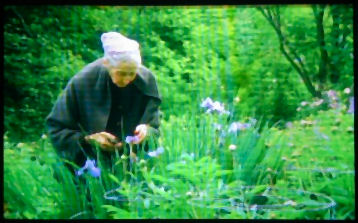 | ９月１１日～ 衆議院選挙の日 昨夕デオデオ行き、デスクトップのマウスが不調なので見て貰う。 今日の出会い テレビ、ターシャ・テューダーさんのガーデニングを見る。 絵本作家 今でもスケッチブックを広げて描く姿を美しいと思った。広大な土地を何十年もかけて自分の自然の世界に作り上げて来て今がある。 春夏秋冬を２時間にわたって報道されたがその間、私は少しの間居眠ったようだ。私も老いたものだと後で苦笑した、最後に又写真に収めた。 選挙も済んで秋日和の１２日、初雪蔓を植え替えようと鉢から抜いた。 この４年どうしても買った当時の、あの白やピンクの葉にならないので奇麗な鉢植えを持っておられる方に聞いて見た、その方も私と同じだったと言う。刈り込みをしてから美しく色づき始めたと言う。今日早速私も断行 緑や赤い葉っぱを刈り取り、根っこだけにして３つに分けた。 葉ざしも試みよう、植物は物言わぬ家族 今月は一つ一つと対話して植え替えて行きたいと考えている。 衆議院選挙の結果自民党が圧倒的勝利をおさめた。過ぎてみると台風の様だ。 一体これからどうなるのだろうか？新人女性議員がいっぱい増えた。 |
| ９月８日 今日も又台風の被害が明らかにされて心が暗くなる。いくら気分転換を図ろうとしていても、テレビのニュースは見てしまう。 今晩も長時間クローズアップ現代でハリケーンの広大な被害の範囲とその爪あとの怖ろしさをまのあたりにした。世界が瞬間に見られる為辛い事も味わう時代だ。 親しい友人から電話で娘さん（５４歳）の頓死を知らされた。ついこの間、お嬢さんの結婚式を済まされたばっかりだった。心臓麻痺と診断されたそうだが、思わぬ出来事で私の方が驚き電話の前で大泣きをした。逆縁は辛い。人間 何が起こるか判らない。この私も生きている限りは元気で明るく屈託無く在りたいとおもう。土を買ってきた。 最後の一踏ん張り、幾鉢かの観葉植物を奇麗に植え替えよう。人様にプレゼント出来る様にしたい。ゆっくり作業をして楽しもう、無理はすまい。 運転免許の通知が来た。いよいよ最後の講習会。 ９月は忙しい月になる。 ９月７日 私の所からは台風は去った。 今宵、スーパーへ行く途中消えかかった夕焼けの空に細い三日月と星とが美しかった。 少し歩く努力をしなければ老い込むばかりだぞ！と引っ込み思案になっている自分に言い聞かせた。久し振りにスーパーのおすしを買う、納豆やライ麦の食パンも買った。ついでに今日発売の雑誌も買う。 昨夜古い日本映画を見た後、現在の暮しと比較した。懐かしいけれど昔の暮しは単調だ。テレビが一日の殆どを牛耳っている今の私の暮しを振り返る時これは幸せなのかなって考える。６０台頃まで働いていた時は夢中でその中に埋没して暮してきたし前向きに掻き分けて進まなければならない生活そのものがあった。現代はどうだろう？家庭に在ればテレビで毎日の暮しが方向付けられる、と言っても過言ではない、余りにも早い情報化の時代だ。台風にしても早１５号が発生している事が報道され、私などは頭の何処かに進路の図面が置いてある、（私は台風恐怖症）記憶が確かでなくなった老人でも今の情報の多さには脳みそを細分室化して情報を仕舞いこむ。あらゆる事に備えようとしているのだ、だから余裕が無い。尤も私はパソコンをいじるからかも知れない。行き当たりばったりで流されて暮らすのは性に合わないがこんなに老いぼれるとそうならざるを得ない。雑誌を買うのはナーンデカ？ テレビ路線を外れたい自意識からか？ ”センスを磨かなくちゃぁネ”って言った事もあるがグラビアや活字を通して何かにゆっくり出会いたいからが一番に有る。テレビは流れる、忘れやすい。本は一冊の中の１ページでも共感共鳴できる事に出会えれば最高の友に出会えた気持ちになる。そして何回でも会えるのだ。忘れていた詩や古い画家の始めてみるデッサン！未知の事が詳しく書かれてあれば（それが雑誌の本命と思う）僅かな好奇心が刺激され、年を忘れて残り火の情熱が燃える！先月の雑誌の内容も殆ど忘れているのに、今月も手に入れた。老人我、確かな真実の友人に出会いたいのだ。萎縮した頭では雑誌が一番手ごろで、グラビアを楽しみ服飾の流行を見流しながら はは～ん、あの頃と同じだと記憶を呼び覚ます。音楽についても演劇、舞台、についても、最新が披露されるページが有る。名作には過去の上書き？を感じたり。若い日からの好奇心で今がある。だから何となく顔馴染みだ。・・・とこんな具合に私はいつも新鮮な真実の出会いを求める為雑誌を買う。 （ チョッピリ over ） |
| 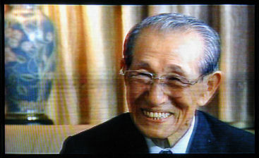 | ９月６日 終日台風１４号のテレビに釘付けになっていた、風も水も怖ろしい。被害甚大でこれから九州の方達は後始末や再出発、どうなるのかと心が痛む。 今７日ＡＭ１時過ぎ、吹き返しの南西の風がごうごうと、うなって吹いている。雨も相当量降っている。此処は大した被害は無い、日中はカーテンを閉め、テレビをつけたままだったから、風雨の音は余り気にならなかった。テレビ画面で水の氾濫の恐ろしさに呆然とした。気がおかしくなりそうだ、何かに集中しようと、ペイントで背景画像を作ったりして自分の世界に入って過した。夜は成瀬監督のモノクロテレビ（妻）を惰性で見た。上原謙、高峰三枝子の倦怠期の夫婦の周辺と何時の世も変わりない男と女の話だった。身につまされた。 昔は皆貧しかったとわが身のその頃を振り返った。２時になった、風は遠ざかったようだ。 ９月４日 午後雨が降り出した、台風１４号の影響か？ セントポーリアの状態を見る、水遣り、トレイの水入れ、済ませる、近じか消毒しよう。プチはこの頃、縄張りガードで一晩中パイプシャッターの中で外を見張っているらしい、昼間は昏睡状態だ。ブラッシングをし、お腹をマッサージしたら安心して眠っている。爪が伸びてあちこち引っかかり切りたい所だが、黒い老いた猫の唯一の武器かも知れないと考えたら切るのを延ばした。 私の頭の状態は風邪気味もあったのか、ポカリ（水分）補給と服薬で少し回復した、しかし食後いつも眠っている状態は、紛れも無く体が老いた事を示すのだと思う。一日の内、活動時間はトータルすると僅かになった。 テレビで好きな事に出会うとそれでその一日は充実できる。今日も夕方大脱走と言うドキュメントに我を忘れた。オーストラリアの日本兵捕虜収容所の秘話だった。私の夫も軍人手帳が有った、書かれた文字が命を左右する程大切な軍人手帳。 生か死かとぎりぎりで迎えた姫路の終戦の時を思い出す。生き残りの方達のお話が痛いほど理解できた。これも多分再放送されると思います。言葉では言い表せない激動の時代を通り過ぎて来て今、テレビで秘められていたこんなドラマの様な話を二日続けて見て、感無量です。 ９月３日 偶然つけたテレビで小野田寛郎さんのドキュメントを見る。 １集から５集まで、今までと現在を詳しく知ることが出来た、ジャングルでの暮しが今最大に活かされている、権力と金力が嫌いだと言われた言葉には共感で嬉しさがこみあげた。中野学校の出身は初耳だった。 再放送があったら是非見て頂きたい、素晴らしい感動を受けた。終り際にデジカメで間一髪撮った写真を記念に置く。（８３歳） |
| ９月２日 この４、５日、頭がおかしい、左後頭部に軽度の痛みが有り異常に感じられる。夜更かしで午前中が不調は何時もの事だが集中力に欠け、ぼんやりする時間が多い。ヤバイ！久し振りでこの言葉を使おう、これが似合う状態だ、さほど深刻ではないのだ。原因は多分息子が９月末に来ると言ってきた事だと思う。気持ちは嬉しいが平素余り話しもしていないので、気が重くなった。 ９月は目白押しの雑用がある、体調さえ良ければ来週辺り庭仕事から始めたい。セントポーリアの植え替えは月半ばから一ヶ月は掛かる。 客があれば（息子でも客である）予定に狂いが生じる、私は思っただけでプレッシャーになり無気力ななっていった。老人とはこうしたものだ。こんな状態では毎日が無駄に流れると、彼宛に今日思い切って手紙を書いた。メールを書き印刷して家族皆が読んでくれるようにファックスで夜送った。内容は来てくれる気持ちへの感謝と、気を使う私の性分だから息子への気遣いで張り切りすぎて無理をしてしまう。何とか今の体調を維持したいので、自分でやれる間は見守っていて欲しい。と、強気に断ったのです。彼らはパソコンを開く間が無いそうだから私の暮しをよく知らないのです。９月の連休は和恵さんが来る予定でしたが暑さで洋裁もストップしているのでこれも伸ばすように頼みました。あの人も老いたご両親が近くに居ます。私もいづれお世話になる日が来ますが後２年は此の儘の暮しをしたいと思っています。 ついこの間は、湘南に家を探して移りたいと頼んだり、本当に我侭なおばあちゃんですね！？ 明日は培養土などを買って来て、観葉植物、多分、最後の植え替えになると思いますがやり始めましょう。、 ８月３０日 ハリケーン・選挙・目まぐるしい内外の情報が報道される。 ＮＴＴからアンケートに答えてください、と電話が有った。こちらの質問もした。東と西のＮＴＴについて聴く、サービスの統一が何故出来ないか？と、元は同じ電電公社でしたが・・・・と言う事で民間になって分かれた途端違いが出ているらしい。窓口サービスも１１６番となり、客と話す機関は無くなったと言う。私は訊ねたい事がいっぱい有ったが、ややこしそうで止めた。３猿主義に撤しないと、余分な心配が生まれる。ＪＲにしても同じかな？無知で疎い世界の事だが、そうしてみると郵政民営化もどうなるか判らないかな？と、思った。 これから１６年までかかって改正？改良？してゆくらしいから私は其処まで見極められないので、気にすまい！ たまたま、その後でテレビをつけ、岡田代表の熱のこもった計画目標演説を聴いたが悲壮感を感じ姿勢を正した。首相のは聞き逃したが、後の人は皆聴いておいた。９月は免許の更新準備のテストもあり、植え替え等も忙しいが大切に一票を使いたい。 |
| 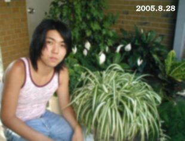 | ８月２９日 朝夕がぐんと涼しくなったように思う。プチも外で休んでいるが朝方は私の足元で眠っている。 今日は市役所へ電話を掛け、ゴミの話を細かく聞いてみた。良いアドバイスを受け幸いした。インターネットで大型ゴミの手続きや料金など調べ、一応印刷しておく。サランラップやポリラップのラップ類の処理は焼却だそうだ。今まで神経質になり過ぎていた感有り。気が楽になった。 晒しあんの粉末（３００グラム）があったので、気分転換に電子レンジで加熱、掻き混ぜ、を繰り返し８０％までに仕上げた、最終仕上げは鍋でじっくり煮詰めたい。半生を幾つにも分けて冷凍庫に仕舞う。 あん蜜に使う当座のものは鍋で練り上げて冷蔵庫に収めたり、缶詰の蜜豆に載せて美味しかった。夜、庭に出たらタンクトップでは寒いくらい、家の中が温かく感じられた。 ８月２８日 午後１２時半 泰斗から℡有り、岩国のお墓参りを済ませ、おじいちゃんのお墓参りもしたいと言って来た。 ２時半に駅に着くからとの事、私は前々夜の徹夜の疲れが残っていてぼんやり朝食を摂った後だったけれど俄然やる気になり、掃除に掛かる、其処此処を片付け、孫を迎える用意が出来た。２時半、車で出かける、駅付近は車の渋滞でメインの大通りから駅への左折が出来ない、大きな男の人が近づいた。７年ぶりに見る泰斗だった。動かない構内の車の列に、通り迄出て来てくれた。それにしても大きくなったものだ、直ぐ其の侭お山へ向かった。納骨堂のおじいちゃんにあげたお線香が消えるまで立ち話をした。おっとりした優しい子に育っている。Ｗ大の２年生、通信社のアルバイトをし始めて半年になるそうで何でも話してくれる。この夏は友人の郷里などを旅？して昨夜は広島の街を歩いたと言う、それから岩国に向かったとか。膝が抜けたジーパンに大きな下駄ばきで昔のバンカラな学生みたいで噴出しそうになった。家に戻り冷えていた桃を美味しそうに食べたり冷コーヒーや小さい私のビールを飲み、パソコンの私のページを開けたが、５時半の切符を買ったとかで忙しく、せめてお好み焼きが食べさせたいと、電話をして頼み、汽車の中で食べる様に駅へ送る途中買って持たせた。 風のように訪れ風の様に帰って行った泰斗。 息子の入知恵で、私の負担が無いように爽やかなショートタイムの出会いだった。 |
| ８月２７日 一昨夜徹夜してページを点検、整理しました。 昨日は昼間安定剤をのんで休息をとり、コントロールできました。 観葉植物、良い材料が無くても一応更新、花木、植物、も目下更新作業中です。 ページの中に見落しやごみ？が残っていて作業室？と店？とを今日も何回となく往復しました。 雑記録帳に直ぐに行けるように一番簡単なやり方で済ませました。コスモス日記が８ページに浮かび上がりました、此処にはケアハウスの写真が載っているのです。キャッツも！（写真は小さくしましたがuenoさんにお借りしている「メモリー」も聴かれます） あのページにも千葉へ行くような心情が書かれていて読んでいて顔が赤くなるのを感じました。独り者の老人は心が泳ぎ易いのです。 ”ケアハウス”今でも私はあそこの暮しに憧れています。現実にはプチが元気ですから望み薄ですが。 彼の地を起点にして旅！ した事が無い旅がしたかったのです。「最後の挑戦」 と、心密かに夢見ました。 あれから２年が経ちました。老人の２年は尊いです。 |
| ８月２５日 近くに住む唯一パソコンの友人MYさんが私のリンクからけいさんのお部屋に行き楽しませて頂いていると報告を受けた。 姪はMIDI`ROOMからuenoさんの部屋へ行き歌詞が有るので聴きながら歌うと喜んでいる。二人ともパソコン初心者なので手っ取り早く私のリンクを利用してお気に入りにしているのでしょう。今日フルスクリーンの画像をたっぷり見せて下さる「美智子の部屋」のリンクをお願いしました。 富良野の風景や”朝もやの中の百合”など素晴らしい奇麗な写真がいっぱいです。 私はHPを作り始めた時判らないままにリンクをお願いして、余り増やさず今日まで来ましたが、この度、移転に伴いリンクURLの変更をお願いし快く応じてくださった方々に心から感謝しています。 例の「ページが判りません？」の嫌な文面に出会うとドキッとします。 移転後アクセスカウンターが０からの出発でした、私は余り気にしませんが、拘る方が多いようです。 私は老人（自分）の生活を曝した日記風記録を記して居ます。 過去に書いた記録の記憶はしっかりインプットされていますから、本当の事を書いて置くと後々為になります。８０歳過ぎたら是非本音日記を書いて見て下さい。 先日ブルーシート記録の幾日かが有りましたが、和恵さんとちょっとやりあいました。その時の、うらぶれた記録なのです。 しかし、その時の”℡主張”は、私を大いに開眼させてくれました。 女はしゃべり過ぎるのです。 殊に私は長く生きているので転ばぬ先の杖的な話をするので、よく誤解をされます。それに経験豊富？なので教えようとします。本質は 愛情なのに、余分なのです。世の中の嫁姑は此処なんですね！ あれから彼女と話していませんが、お互いよく分かり合えているのです。ですからここで学んだ事を大切にしたいと考えたら 「口を慎む」 に尽きます。 サラリと何も残っていません。 昨夜恵理から久し振りに電話でハワイのアルバムが届いたから、やがてCDにして送ると言ってきたついでに ”お母さんとぶつかる度に仲がよくなる” と話しました。 実の親子のように何でも話すのですが、時々やりあいます。 考えてみれば押し付けがましい言葉が多かったですね、怪我をして痛みを知って得た経験がその人を育てるのです。 私は今が一番幸せと感じている。ほんの僅かの時間かもしれないが大変幸せです。自由 責任ある自由を大切にして暮しましょう。 |
| ８月２３日 「処暑」 少し雨がぱらつき気温が下がった模様なので、セントポーリアやエレンダニカの消毒をした。気温が高い時（２５度以上）は消毒は出来ないとお父さんから教えられている。、セントポーリアの水遣りの時、肌がチクチク刺激痛がしたので”虫が居るな？”と、感じた。涼しい事と曇りを良しとして、サプロールとアクテリックの混合液をたっぷりかけた。外の植物にはリノー（展着液）を加えて撒いた。 ボツボツ羊歯辺りから植え替えに掛かろうと思う。 昨夜、観葉植物の全体の更新をしたいと思って始めたが夜中の３時に至って頭が混沌としてきた、途中で放棄。 今夜恵理から前のように見易いページが良いと言われた。何とかしようと私も考えているけれど、移転早々、手っ取り早く過去の画を、トップに置いたら気が楽になって、次ぎへ、次へ、で安易に済んだ気になっている。 本当はもっと自分を奮い立たせなければならないのだ。 で、先ず観葉植物の２００２年辺りから画像を取り出してみた。自分の為の記録なのだからとデスクトップに仕舞ってある写真を総ざらいした。 デジカメやスキャナでスケッチなど、撮り直す必要も出てきた。しかしセントポーリアに就いては、初めの頃の色が好きなので取り替えにくい。 私は「野良猫物語」や「２０周年セントポーリア展」の様にスクロールがじっくり見られて好きだ。でもたまにはお遊び気分も楽しい！ アプレットのモザイクの変わり様が面白いのでピエロを置いてとぼけた笛の音のサウンドを入れたら凄く気に入って、寝る前にはあの部屋を覗く。 何かアニメで面白いものが作りたいと、以前から思っていても実行の運びに至らない。 正直な所、ビルダーのバージョンアップで、以前よりややこしいものが出ている、無視しきれずひっかかる。やっぱり昨年よりぐんと頭が鈍くなっているのだ。 洋裁は中止して植物家族の植え替えやHP作業を優先したいと思っているのだけれど、どうどう巡りになりそうだ。 |
| ８月２０～２１日 土曜日、午後美容院へ行く、三越の店の地元本店だが、客が５人スタッフ４、５人で 大分時間がかかった。 食欲がないしどうも風邪気味なので一日３回、風邪薬を服用し様子を見る。 夜NKさん、小玉スイカを届けて下さる。畑で作られたもの、玄関で暫くお話をする。セントポーリアの高田さんから℡、マランタについての質問だったが、大声で話すのにくたびれた。 今日昼前、MYさんが苦瓜のお料理を届けて下さった。私は未だ苦瓜を食べた事がなかったが、ほろ苦さと上等の味付けで大変美味しい。頂いたスイカを切ってお裾分けをする。 アイスコーヒーをつくってご馳走したら、マシーンを買いたいと言われた。 昼過ぎ、森井さんから電話、来月入居に決めて置いたお姉さんのグループホーム入りは腰痛がひどいので中止になり、整形の今の病院で後１，２年お世話になる事になったそうだ、入院してから早１年が来る。小さい家具を買い病院の個室を整理し易いようにしたが、最近記憶の衰えがひどいので心配と言う。経済的に裕福なのだが家族が居ないので、弟嫁に当たる彼女が後見人、自分も膝や腰が痛むから、老々介護になる。医者の許可が出てホッとしたと話していた。 夜、YKさんから℡あり、１時間に及ぶ。皆 寂しいのだ。私でよかったらと思うが、話の相手も相手の身になればいい加減な返事は出来ないからゆっくり話をする。 この日記を書き始めて居たので、皆さんの顔が浮かびこんな日記になった。私はパソコンのお蔭で何とか未だ独りを保っているが、誰かに依存した途端に緊張感のたががが外れるに違いないと思う。 外は雨、相当降っているようだ。高松の友人も病人、せめて彼の地の貯水池が満たされますようにと祈る。 ８月１７日 私の友人に二所帯住宅で息子の家族と上下同居の人が居る。７０台のご主人は２年前足の手術をされたのでベット暮し、入浴時は手を貸さねばならないらしい。息子さん夫婦はお勤めで家族は４人孫は二人共大学生。自分達夫婦の夕食と一緒に彼女が皆の夕食を用意する。土日は甥や昔の下宿人（独身）も食事に来ると言う。片つけ終わると９時１０時、余り広くない家で朝から晩まで働き詰めだと何時もこれが自分の宿命と話す。体重は３６キロだそうで”倒れないようにしてね！”と私は心配をする。昔から人の面倒をよく見た人で親戚関係の世話もよくする。そんななかでパソコンを始めた、外孫が大学を卒業、使っていたパソコンを貰ったそうだ。家にいる２０歳になる孫娘がメールを教えてくれたそうだ。元々ワープロをやっていた、新聞社へ投稿してはよく載ったものだ。被爆者だから思いをこめて今年も手記を書いたらしい。最近老いた従妹同士で、メールのやり取りが出来るようになったと報告を受けた。何時電話をしても多忙で話す暇が無い。車にも乗り、犬の散歩も自分以外にしてくれる者が無いと嘆く。間もなく７７歳になると言う。実力が有るから家族の頂点に居て絶対的な信頼を得ている。絵を描きはじめた頃からの友人で、力強い絵を描いていた。独りやりたいことをやって暮す私は、家族に心を配り寝る前の寸暇に日記を書く彼女を尊敬し、何時も聴き側にまわる。 |
| 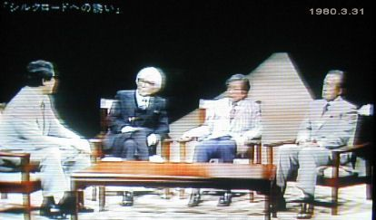 | ８月１５日 ２５年前にさかのぼる放送を見た。（NHK アーカイブス） この中で 井上靖 司馬遼太郎 陳舜臣の方々が、シルクロード、西域への熱き思いを話されていた。語りは石坂浩二氏、司会は山川静夫アナウンサー 最近放送されたその後の新しいシルクロードを私達は感動を持って見て、知った。 解き明かされ行く神秘的でさえある遠い遠い昔の発掘されたミイラや埋蔵品にその時代の人達の優美な暮しを想像し、気が遠くなる思いだった。 ６０歳だった私はこの最初の放送をよく憶えていた。再々、放送もされていたからかも知れないがオアシスの風景などは印象深い。お盆特集、また写真を撮った。 １６日 東北地方で地震、震度６ 矢板へ電話したが留守だった。 昨夜夕食後居眠った折、私は夢で夫と一緒に居た。目覚めた後、不思議な感覚で夫を身近に感じ 「お父さん帰ってきているのね」と、話しかけてみた、夜中になっていたが妙に温かい雰囲気だった。始めての事だった、お盆なのだ。 昨日も今日も昼間シャワーで鈍い頭をリフレッシュさせた。おしゃれをする気になりタンクトップの上に今日は襟ぐりの開いた黄色のシャーツを着てみる。髪が大分白くなった。染めるかパーマをかけるかしたい。夜１１時まで雑誌を読む。小沢征二氏夫人がファッションを手がけ始められたようだ、入江美樹という名前でモデルをしていた頃が懐かしい。４０年余りが経っている。気分転換の積りの雑誌から落ち着いた生活！を取り戻す事ができる、暮しの楽しみを培うのには一番手っ取り早く、料理、フアッション、園芸、インテリアなど生活面や生き方の参考にもなる、パソコン、テレビと違ったスローライフの一方法かも知れない。 |
| 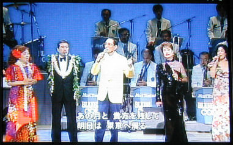 ８月１３日続き １１時PM、ハワイアン特集 大橋節夫のファイナルコンサート、ハニーアイランダース、昔の多彩のメンバーが出演、銀髪の方もあり、で皆素晴らしかった。大橋さんは８０歳、私は幸せを感じ、テレビ映像を撮り、パソコンを開け、記録する。懐かしい歌の数々！！！ （徳光さん司会） |
８月１３日 お盆だからと暑い事を理由にのんびり過す。午後昨日頼んだカプセルとカップ２個が届く。夕方コンビニへ行き送金済む。便利になったものだ、ついでに天丼を買ってきて夕食を済ませる。ビールの小さいのも開けて一人前の暮し方だ。パソコンの勉強をしたいが何もやる気起らず、惰性で暮した。セントポーリアが植え替えを待っているがバーミキュライトの土入れをして水遣り、涼しくなる９月を待つ。 ８月１２日 テレビをつけなければ単純でも穏やかな時間が過ぎてゆくに違いない一日２４時間。 解散の波紋がどうなったか野次馬的な好奇心が頭を持ち上げたらいけない。静かに暫く様子を見て考える事だ。御身ご大切の議員さんが多い。 今日ビグローブから送られて来た郵便物から一日の闘いが始まった。 書類には、既に支払い登録は済ませて有った筈なのに、NTTから戻ってきたとかで、１０桁の番号を入れ変えて送るようにと其処を赤線で印し、失敗した場合の事も考慮して、用紙も封筒も新しいものを入れて送ってきた。 光電話にも番号が有るらしいのだ。初耳だった、それが無ければ手続きは完了しないと、ビッグローブのカスタマでは語気が強かった。 NTTの１１６番はこの話を解る人が午前中居なかった。私は意を強くして、午後 ３回目の１１６の電話をかけた。幸い解ってくれそうな若い人に説明ができた。７０人が待機しているらしい。３回目の人は調べてみます、と いったん電話を切り暫くして掛かった電話で光電話の番号が判った。ハイフンが入ると１１字になる、其処まで神経質に私は考えてビッグローブのカスタマに再度℡した。今度は穏やかな人が応対して要を得た答が返ってきた。新しく書類を書き直し、確認して投函した。 細かい字は天眼鏡で読み非常に緊張した時間を過した。 １１６の待ち時間も光ファイバーやADSLの宣伝で耳ががんがんするので、うるさいから「逆効果ですよ」と言ったら止まった。 始に出たNTTの応対がとても軟弱に思え、これで大丈夫なのかしら？とNTT西日本の為に不安に感じたほどだった。 お盆の為のアルバイトかも知れないがいまI、T通信関連各社が競争で浮き足立っている時、何かがおかしい？と感じられ不安になった。これも老婆心か？！ |
| 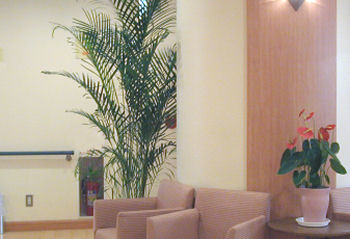 | ８月１１日 今日は大活躍！９時半、先ず本当に久し振りにお山へゆき、お父さんにお線香をあげ話しをして来た。お山は例年のお盆と同じく盆灯篭が立ち、私はそれを写真に撮ったのだが前の日に動画を試みていたので、一枚撮ったら電池が無くなりアウト。 家に戻り ２，３、小包を作り、それを酒屋さんから出した後、街中へ出る。 三越にネスプレッソのコーナーがあると聞いていたので、アクセサリーやカプセルがあると思って寄って見たが、マシーンと試飲だけだったので味わい方を聞いてみた。 氷、砂糖、牛乳、カプセルで夏のこくのある飲み方、カプチーノの作り方など、得る所が多く美味しかった。 帰宅したら、留守中にＨｈさんが来られたらしくとうもろこしや桃の入った袋がドアのノブにぶら下がっていた。 すぐお礼の電話をし、ご馳走になった焼きとうもろこしは福島の産だそうでで甘く美味しかった、大きな桃はお供えになった。感謝！ ８月１０日 午前中に玄関前観葉植物の写真を撮る。午後、雷鳴激しく雨降り出す。思わずテレビやパソコンの電源を抜く程の音だった。雨は夜まで激しく降ったようだ。今日は外出の予定だったが止めて食事作りや洗濯に専念した。 野口さん無事に帰還されほっとする。雑誌のグラビアやエッセイが静かな時間を援けてくれる。とらさんの３を見る。 ８月９日 病院の待合室 アンスリュームと観葉植物が気に入って写真を撮った。午後３時半病院行き（薬を頂きに） 昨夜、竹添さん車のクーラーをわざわざ見に来て下さる。今日は快適な冷房車になった。病院の帰途デオデオでフォトペーパーなど買う。ドーム辺りは観光客か人出が多かった。三越へも用事が有ったが、明日に回す。一日１イベントに決めよう。無理は必ず疲れが後に残る。 |
| ８月８日 衆議院解散となる、終日テレビでなりゆきをみる。夜 小泉さんの話を聞く。 ８月７日 立秋 ８月６日 ６０年原爆記念日 今日は夜７時半から記念コンサートが有るとＹさんからのメールで知っていたので楽しみにしていた。佐藤しのぶさんが始に出られたが直ぐに記念特集に変わった。何年ぶりかで近藤さんに電話をしてイベントのお知らせをする、ご存じ無かったので喜ばれた。時が流れコーラス関係の人達も疎遠になっているようだ。その後は、どっぷり”とらさんの映画”を見て泣き笑いをした。次は都蝶々が出るのでこれもまた見たい。古い下町の情景は懐かしいから昔に戻れる。俳優が皆若かった、今日はさくらさんの結婚だった。 昼間の作業、印刷、友人の展覧会のスナップ、絵等、画像の修正に時間が掛かった。バックの邪魔なものを消したり、明るさを加減する、用紙が有るだけ刷った。２，３、の人に送るべく封筒に入れてポストに出しに行きがてら、酒屋さんに寄って小さいビールを買って帰る。 夕方には体操の積りで裏の草取りを３０分程した、苔を剥し大きい草を抜いただけで終る。茗荷の花が咲いている、１０個ほど採った。 汗ぐっしょり、シャワーを浴び休息をとる。 |
| 昼下がり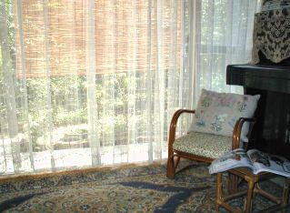 | ８月５日 課題だった草取りがほぼ終った。天地法で土を掘り起こし裏返しにして置くと、この焼けつく様な太陽の力で草の根はからからに乾く。熊手で掻き寄せるだけで処理が済む。 最近自分の睡眠時間は５時間が適当だと解った、毎食後に居眠りをするからかも知れない。朝７時に起き口を奇麗にしてポカリを１００ｃｃぐらい飲んでテレビをちょっと見て８時過ぎ外に出る、スキンガードを体中に吹き付けた後小鍬で作業をする、１回の作業は３，４０分で終らせる。絶対無理はしない、今年は今日で３日目、玄関脇と前庭は大体済んだ。裏はぜにごけがはびこっているが乾燥が続くと簡単に剥れて楽に済む、あと２日で全て済むでしょう！ この夏は実に昔の子供の頃を思い起こすサラッとした暑さなのです。不思議に皮膚感覚が大昔を覚えているのです。小学生の頃平塚の須加と言う所に住んでいましたが夏休みには駄菓子屋で２銭位で買ったふかし芋を（細い芋２，３本）新聞紙に包んでくれるおばさんからひったくるように受け取ると子供達は海に向かって走ります。男の子が多かったけれど長い松林を抜けると砂丘、それを越すと青い海原が広がる。やけつく砂の暑さでも下駄を脱いで手に持ち皆一斉に波打ち際まで走った。 あの感覚が今ドキドキ思い出せます。私は泳げなくて犬掻きでパチャパチャやっていた、一回溺れた事もあって、知らないおじさんの腕にしがみついて助かったっけ！懐かしき日々！ 草取りの後シャワーを浴び、パンが無い事に気づき車でスーパーへ行く。朝は今日の商品ならべで店員さんは忙しそう、本のコーナーで例の分厚いおしゃれ雑誌を見つけて買つた￥７５０ 若い人向けのもので特集は京都。開けたページに「マチュアへの旅立ち」と言う一篇があり昼下がりのひと時を楽しむ。 mature (成熟した、 熟した） 字引を見る、成る程！大人への旅立ちって事ね。 |
| ８月３日 今朝、思いがけない方から小包が届いた。高知のＹ・Ｋさんだった。昨年だったか高知に自然災害？があった時３０年も昔の友人の事を思い出し電話をしてみた、木彫りの友達で四国へ帰られてからは水墨画をされていたが段々遠ざかり賀状も出さなくなっていたのに唐突に電話をかけた。懐かしい声を聴いて変わってないなぁ！と感じた。 転んで腰を痛めたと不自由そうな話しに現実の歳月を感じたのだった。 贈り物はデラウエアのぶどう。すぐ電話をかけた、昔とひとつも変わらない声、長男の結婚披露パーティに出て下さった昔の写真が目に浮かぶ。 一緒に撮った写真も何枚もある。懐かしい！未だ少し不自由そうなお話しだけれど、３０年が圧縮されて話は尽きなかった、。嬉しい出来事！！！ 水道局からメーター機の取替えに来られた、２０分で済む（メモ） 今日一日も静かで、暑い真夏日だった。テレビはなるべく最小限見ることにしていたのだが、久し振りに２時間、あちらこちらをチャンネルを回して見た。現代の派手派手しいお笑い番組が面白くってつい見てしまい後が虚しい。 ミラクル川柳と言うのをやっていたので、イチローさんのブログの葉書川柳日記もこれなのだな！と暫く見て解った。流行らしい。事故以来 入院生活一ヶ月が過ぎた。一日も早く前の生活復帰をお祈りします。 郵政問題で荒れる政界も大変だ、まぁストレスになりそうな事は外そう。何かに集中したい。それには時を大切にする昔に近い暮しをする事だ。そうだ！余りに多い情報に生活を煩雑にしないことだと心に誓う。 ８月２日 昨日ファイル転送が出来なくなった。あれこれやったが断念して今日プロバイダーのカスタマサポーターに電話をした。 女の人が相手をしてくれたが私はとんだ失礼な言葉を口にした。「男の方はいらっしゃいませんか？」相手は冷静で結果的に最善の方法を示してくれた。 「ビルダーに問い合わせてみてください｝ フリーダイヤルは直ぐに繋がり一発で転送の手段が解った。何の事はない！私の勉強不足だった。 昨日ある方から電話が有り「前の花と観葉・・・・のセントポーリアの中におかしな画像が有ります」との事、ロングドレスが漫画チックに圧縮されて入っているではないか！？びっくり慌てた。 誰かが悪戯したらしい、ぶざまで見られたものではない、デブの洋服が二つ並んで広島友の会の方達のセントポーリアの中に収まっているのだ。朝方まで掛かり enjoy のサポートにメールを書いて送った。 ＨＰが二つ有るのが気になっていたので、その事も頼んだ。 朝 メールが入っていた、「うっかり其の侭にして置いて誠に申し訳ないことをした、今朝９時に閉鎖しました」と有り、それから間もなく懐かしいＮさんが電話を下さった。 「インターネットには怖い面が有る」 を画像で如実に感じた出来事だった。 私は自分の記録としてこの記録帳を書いている。 さしさわりのない掲示板のやり取りは不器用なので、時に人を傷つける言葉遣いなどが出そうで、ＨＰ開設当初設置したが１００人位でストップした。 ２００３年の今頃を読むと未だ行動的で若い、如何に老いるか？を模索するには晒すのも一つの方法と開き直ろう。 しどろもどろになり始めたら止める積りです。話題の範囲こそ狭くなったがもう少し続けられると思います。 アクセスカウンターは励みになるので置きますが自分でも何回も確かめに通いますから余り当てにはなりません。 登録も「花と観葉植物の部屋」に戻すように申し込みました。 シンプルに進んで行きたく思います。 セントポーリアの１にピエロを入れてみました。 |
| 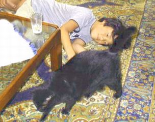 | ８月１日 当たり前の夏の日が続く、有り難い事だ。セントポーリアのスライド二つ作った、重複していてもアプレットの勉強が主なのでやがて直すことにして、意外に簡単に出来ほっとした。ライセンスの購入をしなければ気を使いながらびくびくやらなければならない。ライセンスを得たからと言って使い方はヘルプを見いみい恐々やってみる。多くの方々の素晴らしい表現には程遠いが自己満足した。やはりパソコンは時間を掛けて慣れて行くものらしい。やんじいさまから受けたＪＡＶＡやフラッシュの教えが土台になっている事を思うと、この年でこんな楽しみにチャレンジ出来る喜びには感謝が先立ちます。 昨日は可愛いお客様を迎えた。中尾さんのお孫さん、一年に一回お会いする度に大きくなられ中学の坊ちゃんはお母様より２０ｃｍも大きくなられたとか見事な成長ぶりで野球をしているらしいが見上げるようだ。貴史君は２年生、二人とも動物大好きでプチを相手に遊んでくれたがプチは終いには隣部屋へ逃げて、お布団の上で眠ってしまった。おばあちゃんだからくたびれたに違いない！？自分と重ね合わせた。 写真を何枚も撮ったがプライバシーとやらに引っかかると、ご迷惑だからプチが逃げ出した瞬間のものを入れてみたい。毎年訪ねて下さる３人のお客様、優しいご家族に始めて上へ上がって頂き楽しいひと時だった。 |
| ７月２９日 一昨日”続・花と観葉植物の部屋”として登録をしてみた。 昨夜ＭＳＮのサーチで「続・花と観葉・・・・」が紹介されていて嬉しかった。移動して約一ヶ月になる。前のページのアクセスカウンターが（44000）になりそうでびっくりした。トップの玄関前の植物家族が懐かしい！ＨＰの中身は混沌としていて気になるが、私の今の力としてはこれで精一杯。出来るだけシンプルに贅肉を削ぎ落としたい。正直な在りのままを雑記録として書いているので、時に自分に憐憫を感じるが読み返してみると記憶が鮮明に蘇り、温かい意識がみなぎる、これで良いのだ。 これからもスライドとスクロールの使い分けを考えて作ってゆきたい。まだまだ整理に時間が掛かりそうだ。 野良猫物語をトップに入れたが何時もこれを読みながら涙が止まらなくなる。音楽を聴いた途端、悲しみの原点に立ち戻ってしまう。 ある日突然居なくなったミーを思う時私は涙がとめどなく流れる。 ミーの人格？は素晴らしかった。妹や弟を育てた母親代わりのあの頃が尊く思い起こされる。私を黙ってじ～っと見つめるあの青い眼、ジャコウネコのような匂い。早くに虚勢しておけば良かったのについ遅くなり体が大きくなって野生化していって鋭くなり、私でも中々捕まらなくなった。 その頃、保健所の車を見た事と、ご飯を食べに来なくなった日とが重なり、現実を予感して私はミーを忘れようと努力し続けた。 堂々と上に上がり台所で私が供した食事を摂ってはさっさとどこかへ去って行った日々。 ポアンは未だ若い内にと去勢したが手術後大雪の日に何処か他所で二晩過したのが原因で病気になり、若くして昇天した。彼の最後は夫と見送ったが、断末魔は一瞬だった。人が死ぬ時もこうなんでしょうね、と冷静に二人で話した。暴れん坊だったので手がかかって困って居たのか余り悲しまなかった。 ミーは去勢しなかった為の結果だと後悔している。 高が猫、されど命、一昨年ケアハウスを決めた時もプチの存在で中止になった。今私の横で眠っているプチは私にとってプラスかマイナスか判らない。ブラッシング、指圧、食事と手が掛かるけれど、快さそうにしているのを見ればこちらも満足なのだ。 |
| ７月２３日 昨夜和恵さんから電話あり、恵理夫婦が住まいを移すと言う。今までは狭いマンションだったので荷物は最低限にしていた。今度は古いけれど二間つづきの和室もある日本家屋 色々整えたいようだ。全く便利な世の中になったものだ。電気器具の品定めをする時、店頭から携帯でお母さんに相談が出来る。引越しには和恵さんが手伝いに行く予定で私の所へは既に恵理から家の中などの写真が送られて来ているから理解、想像が出来るので楽しみだ。庭も有り、車２台の駐車も出来る、家賃もすこぶる安い。こう云う話を聞かせてくれる事は家族の参加意識が持てて有難い。今は何でも安く入手出来るが来客用の布団を一組送ってやりたい。彼らが来広した時使う布団が余っている。未だ奇麗だ。 私はこの頃和恵さんから学ぶ事が多くなった。 正直言って（やがて写真でお眼にかけるが）私が丹精して縫ったピンクのドレスはシンプル過ぎた。６月に恵理の友人も二人結婚式を挙げた。その写真を見ると大体華やかだ、私はハワイの写真を見る前に落ち込んだ。１回きり仮縫いしていないから恵理の体型を思い出しながらボデイにあわせて仕上げた服のデメリットが想像出来たのだった。 襟ぐりが大きいから、ファウンデーション（下着）如何でスリップ止めを使えば胸や背中が浮く事が予想できた。芯を貼った硬さが心配だった。 案の定、披露宴を終えてホテルに帰った息子からその指摘の電話が来た。 普段音沙汰無しの息子なのに珍しい！？ 父親代わりのバージンロード 私はハワイ行きの労をねぎらった、式前日着いた彼ら親子に、和恵さんがアロハシャツを用意して置いてくれたと報告を受けた。 多分私の完全主義を知っている彼は写真を見て落胆するだろう母親を想像したのだと善意に解釈したが、その夜は眠れなかった。我が家は４人皆Ａ型人間なのだ。 和恵さんはハワイではウエディングのままで最後まで通すのが普通だと話し、花嫁空席を気にしながら恵理は急いで部屋へ戻り着替えて来たそうだ。 披露宴会場で８６歳になるおばあちゃんがお祝いに作ったドレスと紹介されて、皆さんの祝福を受けたことを伝えてくれた。 あちらの国の人達はそう言う事を大切にする習慣が有るし、自分もそういう生活を大切にしたいとも話してくれた。 何よりも思い出に残る一生の記念になるプレゼントだと何回も礼を言ってくれた。 真理から写真が送られて来た、よく見れば問題にすべき状態では無い事が判った。時間は薬でも有るし素晴らしい友人にもなってくれるものだ。 第一想像していたよりfrankな結婚式だった様でほっとした。日本の結婚式とは全く違う、披露宴で踊っている写真もあるが、外国の人と一緒に和恵さんも踊ったらしい！ 音楽の音が小さかったとか恵理はその事で少し悩み、帰国後疲れも手伝ってしよげていた様だが、これも時が解決してくれた。 和恵さんから洋服のお礼にお母さんの好きな紅茶のカップを２組買ったから今度行く時に持ってゆきますね。と嬉しい話が来た。夏休みは恵理の所へ行くので秋に来広すると言う。それでお茶を飲みましょう、そしてやがて、 私がそれを貰って使うの！ と私なき後の話も平気で口にする。 愛情に包まれているからむしろ嬉しく思う。 常々恵理が 「お母さんとラブさんのような嫁姑の間柄になりたい」 と言っているが何でも正直に本音で言い合って来た。愛していれば必ず判る、誤解が多い歳月もあったが、彼女は今誰よりも信頼できる存在になりつつある。 |
| 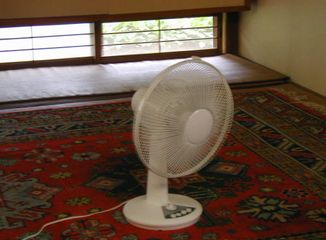 | ７月２２日 風を有難う！ ８畳の真ん中で一日中首を振り回している扇風機。リビングから台所まで流れる空気、１０年位前\1000で買った代物。玄関でも同じ物が回っています。世界中のニュースがインターネットでもとびこんでくる、何と世界が縮まった事でしょう。 しかしもう土曜日が来るのです、眼を休めようと寝そべってばかりいないでと思うけれど、皆目の必要な事ばかりが待っています。 洗濯を２回しても夕方には皆乾く暑い真夏日です。 ハワイの夜の写真 赤目が多くてペイントで始めて直してみました。手前の真理ちゃんだけ正確に直して後はお預け？数が多い！ プチは１週間前から声が出ない、食欲があるから風邪だと思う、でも鳴き声が聞こえないと不自由です。 ＹＫさんがお使いの帰りに寄ってくれて、２時間話し、帰りは車でお宅まで走りました。 何としても今が一番暑いのでしょうね、クーラーは２７度設定２時間タイム。 暑いなぁ！ と思うと時間が来ているってな暮しです。 お仕事の方達に申し訳なく思います。 夕方水遣りを済ませたら８時をまわっていました。 |
| 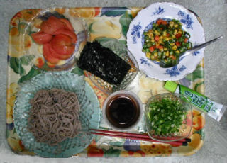 | ７月１９追加 ２回目の食事９時ＰＭ 私が食欲が無いと言うと和恵さんが大丈夫？と心配する。 今日 昼は下の欄に書いたので夜、食べる前に気がついて写真を撮りました。撮影後トマトは冷蔵庫へ！ 野菜が少ないときは冷凍のベジタブルとピーマンをオリーブオイル少量で炒めます。今日はレンジでチンしました。ざるそばは乾麺を茹でたもの 焼き海苔は少しづつちぎっておそばにのせ、湿気ないように味わいます。 これを見て下さったらきっと安心してくれるでしょう。 最近スーパーのお寿司やお惣菜の味が濃く感じられます、プラスチック容器に入ったそれらの物を買わなくなりました。名古屋の満さんがスローライフを楽しんで下さいとメールをくれましたが心して食生活を大切にします。 甘いものもエスプレッソコーヒーを飲み始めてからは余り買いません。 今日は２食でした。早寝の習慣をつけたいと思っています。 テレビから think tank 多分野の専門家からなる総合的な研究集団 頭脳集団 |
| ７月１９日 １８日梅雨明けしたようだ。一気に夏になった、この３日間私は何をしたのだろう？特記する必要のあること。クーラーをつけ始めた、２６～２８度２時間タイムで扇風機と一緒に使用している。 マランタ２鉢、を作り柏葉あじさい（大）を一応8号素焼き鉢に植え替えた。（小）は花が咲き終わったので二節残して切った、胴長だがこれは地に降ろそうと考えている。ごみ問題が厳しく新聞や町内の話題にものぼる。昨日暑い日中不燃ごみが気になって物置を見た、鳥篭や大鉢など今の内に整理したいと考える、汗びっしょりになりながら鳩を飼った頃の鳥篭を洗った。捨てるにしてもその方が快い。 材木や体力の必要な大きな物は屋根屋さんに相談したいと思って電話をかける、折り返し電話が掛かり、近く仕事帰りに寄ってくれる予定。 今日午前中眼科医に行く。この一 ヶ月涙線が詰まったのか涙が出て目が異常感ありなのだ。洋裁や読書、テレビ、パソコンなど眼を酷使しているから白内障がひどくなっているのかも知れないと思っていた。 眼科医は１昨年メガネを作る時に始めてお世話になった女先生 涙腺を通して頂く。右目が結膜炎を起こしているそうで目薬が出た。右目の機能が大分落ちているらしい、様子を見てメガネを作る必要があるようだ。私は白内障が原因と思いこの際手術を受ける積りだったが眼が煩わしく思えるのはその所為ではない様だ。 先生は「これ位見える眼では未だ何処でも手術はしてくれませんよ」と言われたが、良い意味に取るべきかどうか不審だ。 手術して、もし見えにくくなればこの年ではマイナスが多い人生になる、此の儘で治療して最善をとった方が良策だ。 仰向けになる椅子で涙腺を通す治療を受けながら、先生と世間話をする、2年前も書いたが、ご主人も外科のお医者様で、以前ＪＲで診て頂いた事がある所為か旧知の間柄の如く気楽にお話が出来る。定年で止められたご主人は他のお仕事に就かれたが、これも間もなく65歳になれば辞めるでしょう、と淡々と話された。7年前 夫がお世話になったＪＲ病院も今は空きベットが結構有るらしい、世の中の変貌が著しい事など関係なく暮している自分の今が浦島太郎に思えた。食事を楽しんだ弥生会館の跡地も大きな道路になるらしい。昨今の順送りではない死についても触れられた。 今朝は朝食抜きでポカリやオレンジジュースの水物だけで過し午後2時過ぎ小さなおにぎりを作り、買ってきた活きの良い鯵を塩焼きにして胡瓜の糠漬け、納豆、牛乳とチーズ一切れも加え今日１回目の食事を済ませた。 メモ・Ｓan.７ Ｐａｂ160 |
| ７月１５日 昨夜、うっかりの上書きでフアッション・ショーのスライド画像が消えているのを見つける。慎重に整理するのに朝方まで掛かった。 転送は止めて一応閉めておく。 ファイルの名前を面倒がらずにきちんと付ける事、を学ぶ、数字だけでは紛らわしい。 夜型生活が本格的になって来ていて、昼間の生活の実働時間が少ない、これは直さないと認知症に繋がりそうだ。 １２時までに眠るように努力したい。 湿気で家の中が不快なので扇風機を使って居る。クーラーなし、 室温３０度ｃでも和室からガラスを外したセントポーリアのケースに向けて首を振らせると２４畳の部屋全体に結構自然の風を感じる。 一日中プチがソフアーでこころよさそうに眠っている、重労働をしない限りは使えそうな方法だ。 但し風の抜け道を作ることが大切、 今日は玄関にも置いた。 ２台ある背の低い扇風機は組み立て式で毎年夏が終ると解体して奇麗に洗って仕舞って置く（直径３５ｃｍ）の安物だ。設置した後、組み立てが未だ出来る自分にホッとしている自分を意識する。 今年も出来た！セントポーリアのトレイに水を張って置くと、気化して涼しいのかセント達も機嫌が良い。 今日午後 庭のどくだみを全部引っ張って抜き叢を無くした、蛇が潜みやすいから八つ手の葉も元から切り落とす。 汗で体中ぐっしょりになる、葉っぱの後始末は後にしてシャワーを浴びた。 夜久し振りの月を見る。 |
| 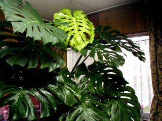 | ７月１４日 ”wedding” をアップできました。やんじいさまが作って下さいました。 音楽まで入っています、今恵理たち夫婦は新婚旅行中 帰ったらきっと喜ぶでしょう！アメリカのご両親やお友達も私のＨＰで写真を見るのが楽しみだそうですからプライベート用みたいなこのＨＰを大切にして”ハワイ”編も又作りましょう！ 今日は病院へお薬を頂きに行き、ボストンタマシダを家に持って帰りました。 疲れているようなので青空の下植え替えてすっきりさせましょう。病院では室内ですから不自然な状態だったのですね。自然は尊いです、この間買ったベゴニアも長雨で病気が出ました。今日は１０分の一に小さく刈り込みました。消毒が最初の仕事、全て出発点です、体力が無くても愛情で美しく育てる積りです。雨が上がったら観葉植物の管理が始まります、忙しくなります。 ７月１１日 今年始めてのモンステラの葉開く。天井に届きそうな勢いで伸びてゆくモンステラに昨日気づいた、傷がつかない様に他の葉と離し霧をかける。伸びやかにあれ！ 今日は気分が落ち込んでいたけれどプチのキャットフードがないのでホームセンターまで走る。行きは太陽が出ていたのに帰りは暗い雲に覆われた。又雨の予報、テレビは本当に見なくなった、でも今夜はプロジェクトＸをみた。ＹＳ１１、飛行機の話、同じ時代を生きてきたから感動をもって見た。 ホームセンターで植え土用、バーミキュライトも買ってきた。この葉が確りしたら植え替えを実行したい。 |
| 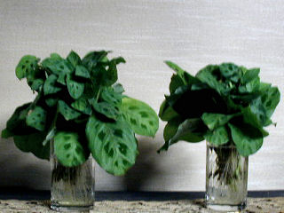 | ７月１０日 日曜日、隣組の清掃日なのに寝坊をしてしまった。雨の為植えそびれているマランタが新しい葉を出し始めている。コップの中は白い根がいっぱい、本来は５，６月の作業、鉢に植え奇麗に育った頃、プレゼントにすると、誰でもとても喜んで下さる贈り物になる。今年は出遅れた。 ＹＳさんから長い電話で５時をまわる。若い方の話しを聞く事も大切何かしらを得る。 Ｈ・Ｈさんから頂いた水茄子の糠漬け、（大きい丸い茄子）初めてご馳走になる、やわらかい。大坂の産らしい。雨絶え間なく降る。 ７月９日 もう土曜日 雨がふったり止んだりの一日だった。電話に出た私が元気が無かったとて、雨の中を村上さんが酢の物、鳥肝の煮たの等おかずや味噌汁やくずきりまで作って届けて下さった。感謝である。イエスとパウロのお話を聞く。こう雨が続くと昔聞いたノアの洪水のお話しが思い出される。 夜１０枚ほど観葉植物の絵葉書を刷り、空欄に挨拶とＵＲＬを印刷した。知人や甥に送らないとと考えたから、ついでに住所録を新たにＸＰに付いているソフトで作り始めたがこれはあ行だけでお仕舞にした。 |
| ７月７日 七夕 長雨の後の陽光は眩しい！ 先ず洗濯をすませた。 午後テレビをつけたら東京下谷の朝顔市を取材していた。朝顔も種類が増え宿根の種類もあった。中々見事で団十郎と言う名の茶色めいた花が人気だとか一鉢に４種類植わっていて色々楽しめるとか活きいきした季節の便りを見た。 リンクの皆様にＵＲＬの入れ替えをお願いしたら、お返事が届きました。 息子位の年齢の方達が多いようです、お優しい文面に温かいものを感じ嬉しかったです。 一つ私の大好きな癒しの郷を増やしました。ＨＰ設置の頃から知っていて時々、トップにアルプス背景画像のあるこの方のページへ行くのです。 アクセスカウンターが今月”０”から始まりました、前の 花と観葉植物の部屋は （６月２７日 ４３３３７）でした。多くの方がいらしって下さいましたが、残念なことに２７日に光電話の工事が実施された為、電話線が早く切られ、３０日までに書きいれようと思っていたメッセージが入れられませんでした。知っている方だけにメールをしたり、リンクの方に連絡をしました。あれだけ来ていたおかしなメールが来なくなり、ほっとしています。 掲示板は置きませんが今度は１００メガ迄使えるので画像を送るのに、びくびくしなくても良いのが嬉しいです。又これからお勉強のやり直しを致します。脳は使えば使うほどその方面の神経細胞が広がってゆくらしいので、パソコンでも前向きに進んでまいります。 コンテンツは今まで通りで修正しつつ、日記の更新が主で、認知症発生を自覚するまで続けます。 何処まで行けるかな？！ |
|
７月３日
weddingのスライド 国際結婚の二人が去年10月入籍した折に、日本のきものを着て、或る神社で結婚記念の写真を撮りました。 写真屋さんや着付けの人、和恵さんと真理ちゃんも馳せつけて助っ人になり、撮った写真を恵理ちゃんがプリンターで編集して立派なアルバムを作り、彼のご両親や私にも送ってくれました。 それをスキャンして１４枚に纏めました。 先日のハワイの写真は未だ全部揃わないので、これからよいのが送られてきたら又スライド写真を作ります。 ７月２日 昨夜から何回も雷鳴がとどろき、激しく雨が降る。貯水池の水が半減したと報道されたのはついこの間だった。 報道や情報に惑わされたくないと心が予防線を張っている位、暗い話しが多い。悲しいなぁ！と思う。 姪が電話の折、 広島へ姉妹二人で来る と言いました、何時？秋がよい！ いや夏の方が荷物が少なくてらくね。 そう！ 私が動ける内に来て一緒に宮島へ行きたいとの事です。 はな息は荒くても三人とも老女なので、果して実行出来るかどうか判りません。 よく気のつく、優しい人達ですから、多分私も甘えてホテルなんかに泊まって、私の父母、姉達の思い出話に泣き笑いをすることでしょう。 何時までも健康でありたいですね。 |